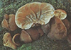

A termőtestek felső része barna, vörös- vagy olajbarna színű, alsó része sima
vagy szemcsés, bársonyos, színe világosbarna. A hús frissen rugalmas és a bőr
alatt kocsonyaszerű. Eső után a kiszáradt gomba újból feléled. Egész évben terem
- ködös időben a téli hónapokban is. Síkvidékeken és dombvidékeken egyaránt
előfordul, helyenként gyakori, különösen ártéri ligeterdőkben. Ehető, frissen
vagy szárítva levesekhez, húsételekhez adható, a kínai konyha nélkülözhetetlen
alapanyaga. Gyógyhatású gomba, megakadályozza az érrendszerben a
vérrögképződést.